Gesellschaft EN
Three surprising reasons to slow down for a thoughtful, nutritious breakfast
Quelle: Positive News · 9. Oktober 2026 Illustration
PositiveDinge
Diese Seite sammelt aktuelle Meldungen aus deutschen und englischsprachigen Quellen — und behält nur die guten. Jede Nachricht führt ihr Bild, ihre Quelle und den Link zum Original mit.
Ein Teil der Quellen berichtet ohnehin nur über gute Nachrichten. Bei den allgemeinen Nachrichtenquellen entscheidet ein Filter, und zwar bewusst umgekehrt als man zunächst denkt: Nicht das Negative wird ausgesperrt, sondern das Positive muss nachgewiesen werden. Eine reine Sperrliste ließe fast alles durch — die meisten Meldungen sind nämlich neutral, nicht offensichtlich negativ.
In drei Stufen: Zuerst fliegen Formulierungen raus, die gut klingen, aber einen Fehlschlag beschreiben („Rettung gescheitert"). Dann greift eine Sperrliste gegen Gewalt, Unglück und Katastrophen — mit einer Ausnahme für verneinte Formen, denn „ohne Verletzte" ist eine gute Nachricht. Was übrig bleibt, muss Punkte sammeln: positive Wörter im Titel zählen doppelt, negative ziehen ab.
Ehrlich gesagt: Wortlisten können nicht garantieren,
dass nie eine unpassende Meldung durchrutscht. Sie senken die
Trefferquote deutlich, mehr nicht. Deshalb protokolliert jeder Build
jede Entscheidung, und Fehlgriffe lassen sich in
config/overrides.json in Sekunden korrigieren.
Zuletzt gebaut: · 11 von 11 Quellen erreichbar
Zu diesem Thema gibt es gerade nichts.
Gesellschaft EN
Quelle: Positive News · 9. Oktober 2026 Illustration
Umwelt & Klima EN
Quelle: Positive News · 9. Oktober 2026 Illustration
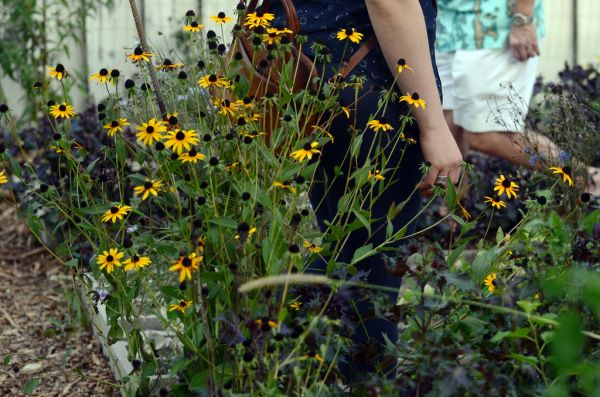
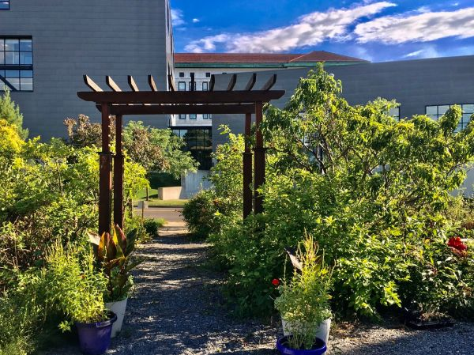
Gesellschaft DE
Quelle: Tagesschau · 9. Oktober 2026 Bild: Carrotflower Productions International · BY-SA 2.0
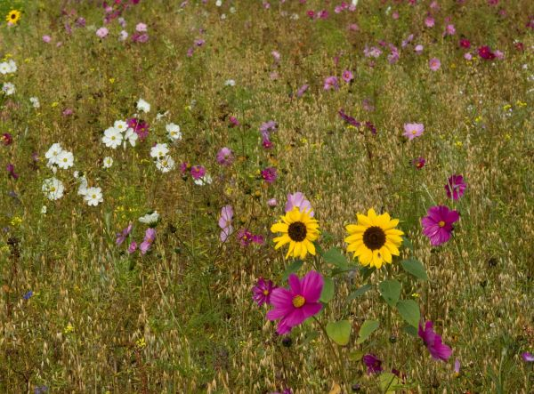
Tiere & Natur DE
Quelle: Spiegel · 9. Oktober 2026 Bild: Floortje Walraven · BY 2.0
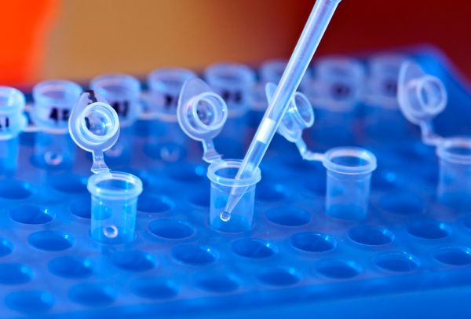
Wissenschaft & Technik DE
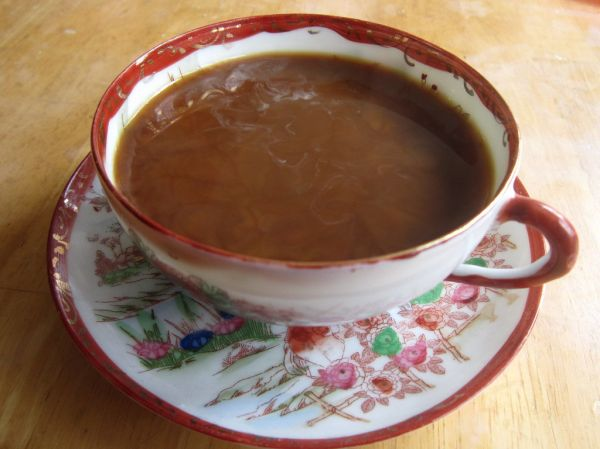
Wissenschaft & Technik EN
Quelle: Optimist Daily · 9. Oktober 2026 Bild: moonlightbulb · BY 2.0
Gesellschaft DE
Quelle: ntv · 8. Oktober 2026 Bild: OakleyOriginals · BY 2.0
Gesundheit EN
Quelle: Good News Network · 8. Oktober 2026 Illustration
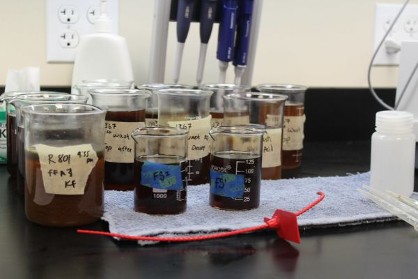
Wissenschaft & Technik DE
Quelle: Tagesschau · 8. Oktober 2026 Bild: UnitedSoybeanBoard · BY 2.0
Gesellschaft EN
Quelle: Good News Network · 8. Oktober 2026 Illustration
Gesundheit DE
Quelle: Good News Magazin · 8. Oktober 2026 Bild: TheNoxid · BY 2.0
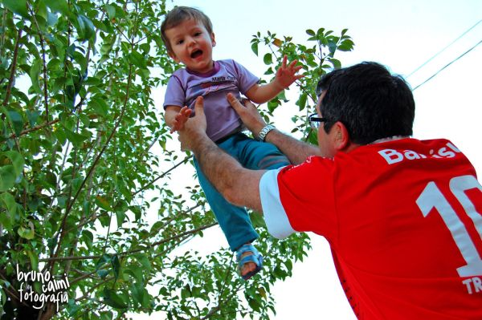
Gesellschaft DE
Quelle: MDR Aktuell · 8. Oktober 2026 Bild: Bruno_Caimi · BY 2.0
Gesundheit DE
Quelle: goodnews.eu · 8. Oktober 2026 Bild: TheNoxid · BY 2.0
Gesellschaft EN
Quelle: Positive News · 8. Oktober 2026 Bild: Alaskan Dude · BY 2.0
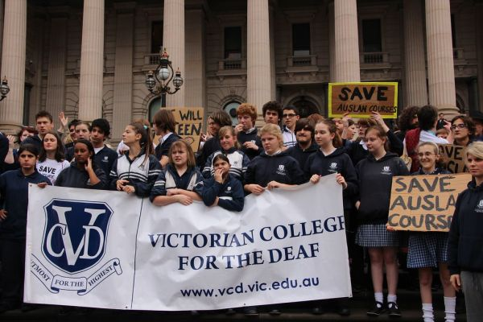
Gesellschaft EN
Quelle: Reasons to be Cheerful · 8. Oktober 2026 Bild: John Englart (Takver) · BY-SA 2.0
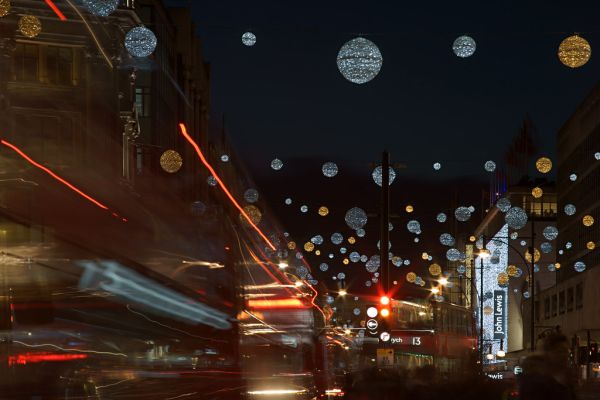
Gesellschaft EN
Quelle: Optimist Daily · 8. Oktober 2026 Bild: histogram_man · CC0 1.0
Gesellschaft EN
Quelle: Good News Network · 7. Oktober 2026 Illustration
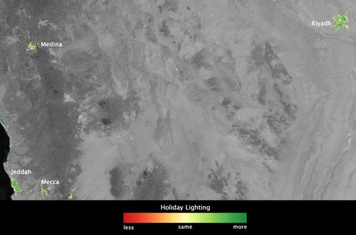
Tiere & Natur EN
Quelle: Good News Network · 7. Oktober 2026 Bild: NASA Goddard Photo and Video · BY 2.0
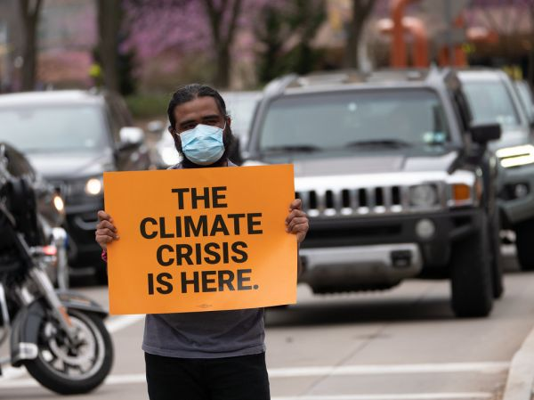
Gesundheit DE
Quelle: goodnews.eu · 7. Oktober 2026 Bild: TheNoxid · BY 2.0
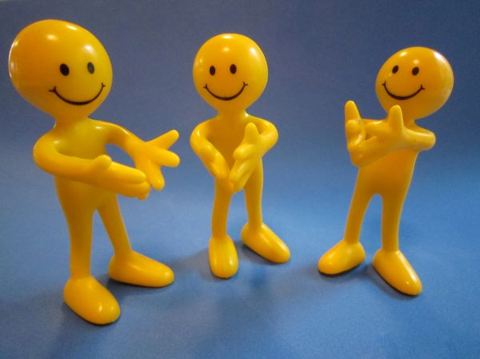
Gesellschaft DE
Quelle: Good News Magazin · 7. Oktober 2026 Bild: katerha · BY 2.0
Gesellschaft EN
Quelle: Good News Network · 6. Oktober 2026 Illustration
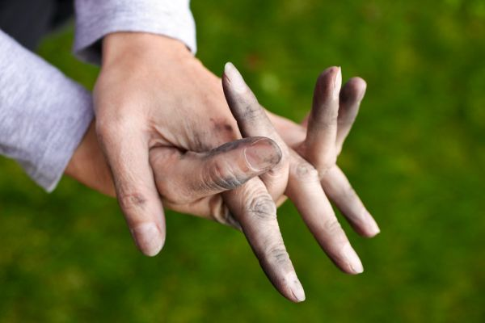
Gesellschaft DE
Quelle: goodnews.eu · 6. Oktober 2026 Bild: Håkan Dahlström · BY 2.0
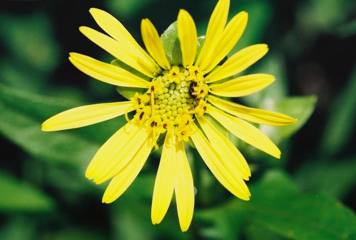
Tiere & Natur DE
Quelle: Good News Magazin · 6. Oktober 2026 Bild: jlodder · BY 2.0
Gesellschaft EN
Quelle: Positive News · 6. Oktober 2026 Illustration
Sport EN
Quelle: Good News Network · 5. Oktober 2026 Illustration
Gesellschaft DE
Quelle: goodnews.eu · 5. Oktober 2026 Bild: tec_estromberg · BY 2.0
Gesellschaft EN
Quelle: Positive News · 5. Oktober 2026 Bild: kl.fitness · BY 2.0
Tiere & Natur EN
Quelle: Optimist Daily · 5. Oktober 2026 Illustration
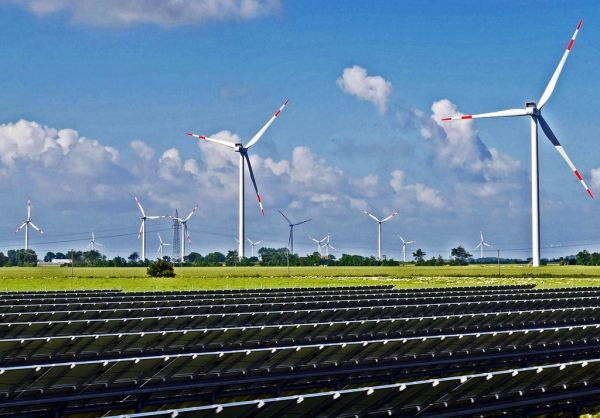
Umwelt & Klima DE
Quelle: goodnews.eu · 2. Oktober 2026
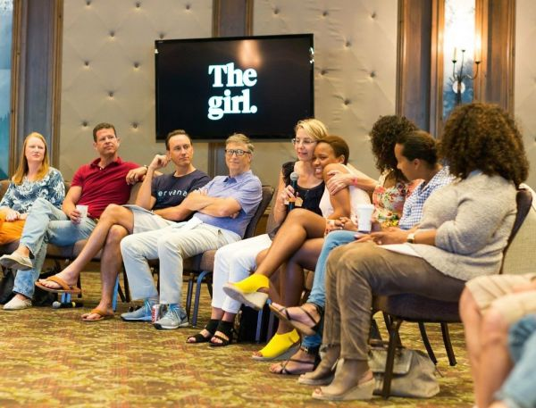
Gesellschaft EN
Quelle: Positive News · 2. Oktober 2026 Bild: jurvetson · BY 2.0
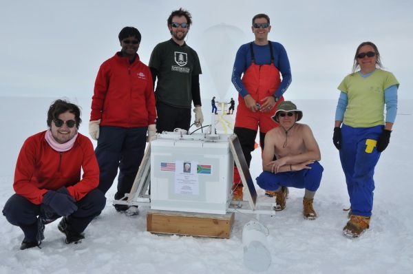
Gesellschaft DE
Quelle: goodnews.eu · 1. Oktober 2026 Bild: NASA Goddard Photo and Video · BY 2.0
Gesellschaft EN
Quelle: Reasons to be Cheerful · 29. September 2026 Bild: NICHD NIH · PDM 1.0